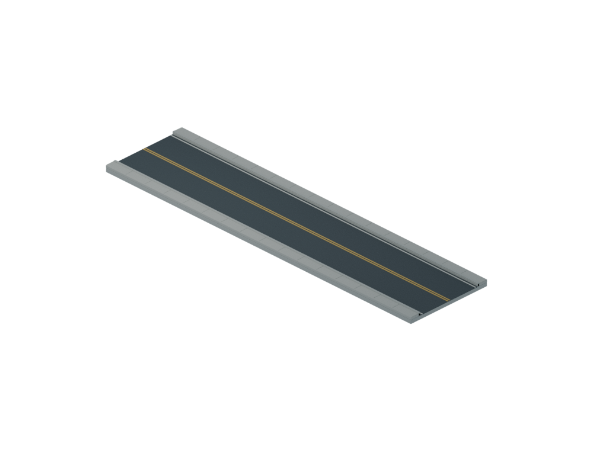
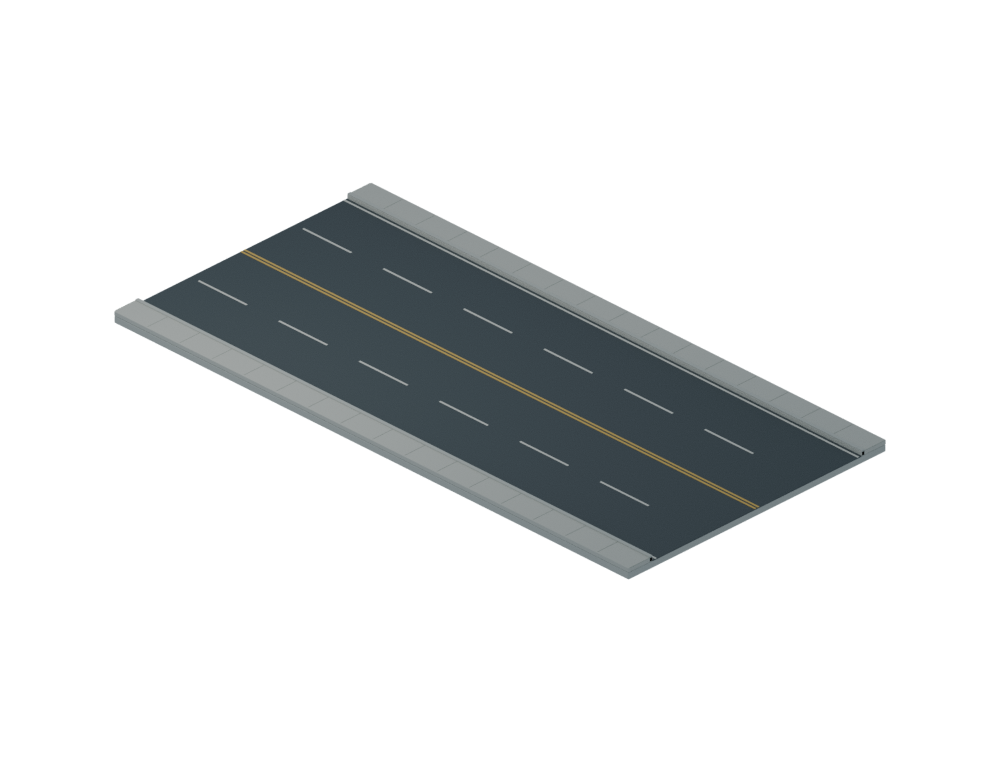
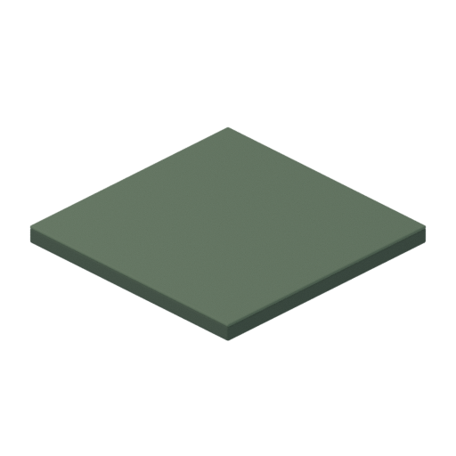

왕복 2차로
방향별 1차로 + 1차로 · 동네 도로
폭 2칸 / 8m

차도 6m
양쪽 보도 각 1m
길이 8칸 / 32m양쪽 보도 각 1m
중앙 황색선 · 외측 경계선
1칸 = 4m · 기존 맨션과 같은 축척 · 동일 시점의 도로 폭 비교
방향별 1차로 + 1차로 · 동네 도로

방향별 2차로 + 2차로 · 주요 도로


4m × 4m
처음에는 격자선 없이 표시
도로 주변 건설 구획만 드러남
400m × 400m · 총 10,000칸
중형 주거 4×4 부지 = 16m × 16m
4.096km × 4.096km
빈 지도·국소 도로 검사 완료
대규모 도시 성능은 후속 검증